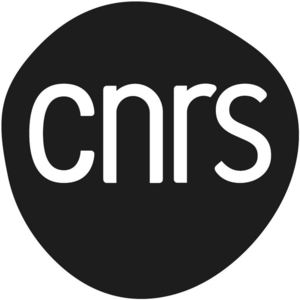

Trade Mark Journal No.2025/017 25 April 2025
WO0000001849184 (9,16,35,36,41,42,45)
Office of origin: France
Date of International Registration:13 November 2024
Date of designation in the UK:
13 November 2024

International priority date claimed: 13 September 2024
(France)
(5082200)
- Class 9
- Scientific apparatus and instruments; research apparatus and instruments; apparatus for laboratory and scientific research; simulators; measuring apparatus, instruments and devices; weighing apparatus and instruments; optical apparatus and instruments; test benches [checking apparatus]; software; artificial intelligence software; diagnostic apparatus for use in research laboratories; data processing programs, systems and equipment; downloadable electronic publications; data storage devices and media; magnetic, optical, digital, audio and electronic recording media.
- Class 16
- Printed matter; pamphlets; journals; magazines; books; newspapers; printed research reports; posters; photographs; instructional or teaching material (except apparatus).
- Class 35
- Promoting research (advertising); advice, expertise and assistance with respect to commercial prospection, market studies, business negotiations, in particular negotiations on research contracts, contracts for the transfer of innovations, technologies, research results and intangible assets; advice, expertise and assistance with respect to commercial valuation of innovations, technologies, research results, intangible assets; advice, expertise and assistance with respect to company coaching, maturation, company incubation; advice, expertise and assistance to companies with respect to commercial assessment, auditing, acquisition, appropriation, transfer, exchange and valuation of innovations, technologies, research results, intangible assets such as patents, supplementary protection certificates, know-how, software, trademarks, distinctive signs, drawings and models, domain names, plant variety rights, databases and data, copyrights; advice, expertise and assistance with respect to business negotiations relating to innovations, technologies, research results, intangible assets such as those previously defined; market studies; business auditing (commercial analysis); research for business namely research, negotiations, piloting and coordinating research, institutional, industrial or commercial cooperation or partnerships, between industrial actors, inventors and research centers; business management assistance namely piloting and coordinating business operations particularly transfers and exchanges of innovations, technologies, research results, intangible assets; piloting and coordinating transfers and exchanges of innovations, technologies, research results, intangible assets; commercial intermediary services with respect to the creation, consolidation and development of private or institutional partnerships connecting private investors, universities, research institutions, companies and entrepreneurs seeking financing; negotiating business contracts for third parties relating to the acquisition, appropriation, transfer, exchange and valuation of innovations, technologies, research results, intangible assets; commercial prospection and business introductions relating to the transfer, exchange and valuation of innovations, technologies, intangible assets; business management advice namely managing research programs, programs for the acquisition, appropriation, transfer, exchange and valuation of innovations, technologies, research results, intangible assets; preparing studies, reports, surveys, economic forecasting and statistics; public relations; commercial lobbying; sponsorship search; business networking; distribution of promotional material; gathering, collection, systematization, compilation, maintenance, processing and analysis of data and information in databases and computer files for business purposes; compiling statistical data for use in scientific research; planning concerning business management, namely, searching for partners for mergers and acquisitions, as well as for company creation; negotiation of business contracts for third parties; merchandising display services for commercial purposes for mouse pads, decorative magnets, USB flash drives, sunglasses, paste jewelry, key rings and keychains and charms therefor, lapel pins [jewelry], brooches [jewelry], bracelets, watches, candles, art objects, photographs, stationery, instructional material [except apparatus], boxes made of paper or cardboard, cards, books, writing instruments, pens, pencils, posters, prospectuses, brochures, calendars, albums, pads [stationery], notebooks [stationery], postcards, engraved art objects, lithographic art objects, lithographs, paintings [pictures], framed or unframed, drawing instruments, drawings, bags [envelopes, pouches] made of paper or plastic for packaging, decalcomanias, paperweights, rulers, rubber erasers, pencil sharpeners, boxes made of cardboard or paper, pencil cases, umbrellas, writing pads, paper emblems, bags, handbags, traveling bags, beach bags, sports bags, backpacks, wallets, coin purses, satchels, umbrellas, key cases, carrying cases for documents, card cases, belt bags and hip bags, clutch bags, mugs, cups, bottles, insulated bottles, glasses [receptacles], drinking bottles, figurines [statuettes] made of porcelain, ceramic, earthenware or glass, including models or miniature replicas of cities made of these materials, glasses [receptacles], crockery, clothing, headwear, shoes, scarves, long scarves, stoles, caps, beanies, berets, T-shirts, sweatshirts, polo shirts, pullovers, gloves, hosiery, socks, neckties, socks, slippers, games, toys, models [toys], balls, decorations for Christmas trees [except illumination articles], card games, puzzles, candles, cushions, fans for personal use, pocket trays [containers for small objects] for household use, tea towels, household linen, embroidered emblems, lighters; advice, information, consultations and expertise concerning all the aforementioned services; compilation of scientific information.
- Class 36
- Financial evaluations with respect to innovations, technologies and intangible assets, research results (valuation); advice, expertise and support with respect to financial evaluations of innovations, technologies and intangible assets, research results (valuation); economic and financial optimization of innovations, technologies and intangible assets, research results (valuation); project financing services; seeking financing and financing negotiations on behalf of third parties, particularly with banking institutions and financing agencies for research and development projects, for the industrial and commercial development and exploitation of research results, innovations, new technologies, intangible assets such as patents, supplementary protection certificates, know-how, software, trademarks, distinctive signs, designs and models, domain names, plant variety rights, databases and data, copyrights and artificial intelligence; financing of research and development projects, projects for the industrial and commercial development and exploitation of research results, innovations, new technologies, intangible assets such as previously defined; capital raising and capital raising negotiation services; equity investment in companies and negotiations of equity investment in companies; fund investment; granting of loans, scholarships, grants; advice and expertise with respect to seeking financing.
- Class 41
- Training; education; scientific teaching; training courses concerning research and development; organizing, conducting and coordinating colloquiums, exhibitions, congresses, seminars, conferences, symposiums for educational purposes; editing and publishing brochures, journals, magazines, books and newspapers; film production; video production; editing of electronic publications; publishing scientific articles and specialist scientific information journals; editing, writing of reports and writing of texts; publication of scientific articles; publishing of scientific works; organizing competitions in the scientific field.
- Class 42
- Consultation, research and assistance services for research; research in the field of artificial intelligence; technological advice in the field of artificial intelligence; technical measuring and testing; provision of information and results with respect to scientific research from an online searchable database; scientific research, including those conducted using databases; provision of scientific information and advice; provision of information and results with respect to scientific research; evaluations in technical fields provided by engineers; advisory services with respect to technological services; scientific laboratory services; research laboratories; development of testing methods; scientific research and development; scientific study services; scientific design services; research services in the field of science, physical sciences, mathematics, statistics, modeling and digital simulation, atomic, nuclear and molecular physics, optics and lasers, liquid physics, the physics of mechanical behavior, the physics of biological objects, nanophysics; research services in the field of universe sciences, planetology, oceanography, geology, geophysics, climatology, hydrology, vulcanology, seismology, the environment, planetology, astronomy, astrophysics, particle physics, nuclear and hadronic physics, astroloparticles and neutrinos, downstream of the nuclear power cycle, research and development of accelerators, calculation grids; research services in the field of chemical sciences, materials, pollution control chemistry, pharmacy, chemical energy, cosmetics, agrochemicals, catalysis, geochemistry, electrochemistry, photochemistry, pharmacochemistry, life sciences, structural biology, microbiology, biology, pharmacology, neurosciences, cognition, immunology, genetics, cellular biology; research services in the field of physiology, plant biology, biodiversity, biotechnology, plant biotechnology, genomics, epigenetics, medicine, pharmacology, virology, parasitology, enzymology, pathology, neurophysiology, human and social sciences, prehistory, archaeology, history, ethnology, philosophy, linguistics; research services in the field of geography, economics and management sciences, sociology, political sciences, legal sciences, geography, demographics, history of the arts, Egyptology, anthropology of art, ethnomusicology, museology, anthropology, biological anthropology, culture, religion; research services in the field of economics (microeconomics and macroeconomics), finance, ethnology of techniques, sociology of science and techniques, epistemology, psychology, literature, communication science and technology, environmental and sustainable development science, climate change, biodiversity, sustainable cities, energy, health and the environment, climatology, ecology; research services in the field of ethology, information and engineering sciences and technology, micro and nanotechnologies, photonics, electrical energy, waves, mechanics, acoustics, bioengineering, materials, heat, fluids, plasma, combustion; research services in the field of computing, automation, robotics, signal, artificial intelligence, imaging, electron microscopy, biomechanics, biomaterials; design and development of software; programming for computers; provision of scientific information; surveying (engineering work); research center services; advice and expertise with respect to research and development, engineering, innovations, technologies, particularly in the following fields: agri-food, environment, electronics, energy, electricity, mechanics, life sciences, earth sciences, materials science, universe sciences, chemistry, biochemistry, cosmetics, health, therapeutic methods, medical and scientific research in the pharmaceutical industry, biopharmaceuticals, medical diagnostics and medical imaging, computing, bioinformatics, biophysics, biology, biotechnology, organisms biology, botany, physics, optics, civil engineering, industrial engineering, robotics, nanosciences, nanotechnologies, mathematics, and telecommunications technologies.
- Class 45
- Drafting, negotiating (legal services) and monitoring of contracts, particularly and non-exhaustively, confidentiality contracts, research contracts, consortium contracts, partnership agreements, contracts for transfer or licensing of rights, contracts for acquisition, appropriation, transfer, exchange and valuation of innovations, technologies, research results, intangible assets, co-ownership of intellectual property rights; legal services with respect to the creation of companies, intellectual property, research units and spin offs; intellectual property licensing; lobbying services other than for commercial purposes; political lobbying.
Centre National de la Recherche Scientifique (CNRS)
Representative: Madame Leroux Isabelle DENTONS EUROPE AARPI, 5 boulevard Malesherbes, F-75008 Paris, FRANCE